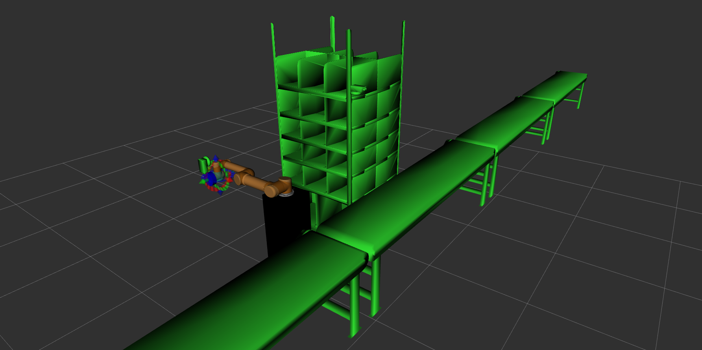
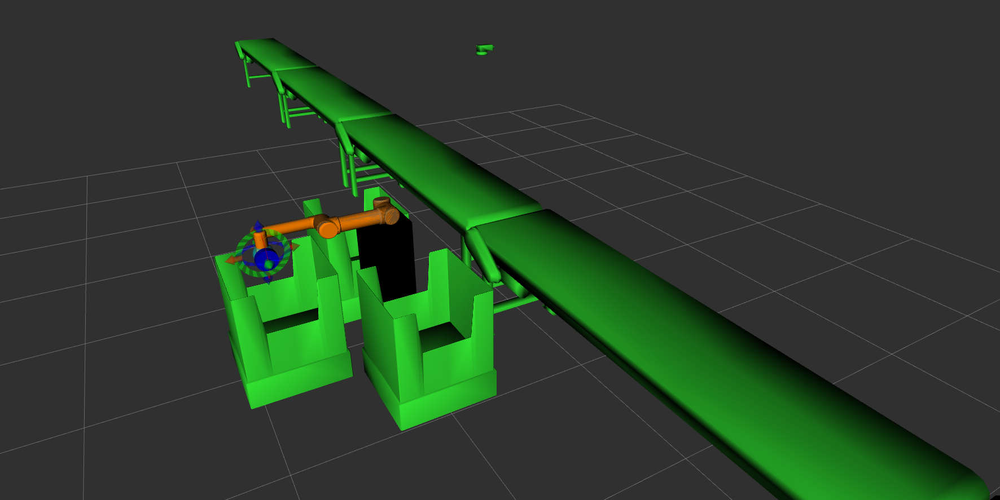

Vargi Bot
Introduction
We made a Warehouse Management System to sort packages based on incoming customer orders from different cities.
-
We identified the color of packages, present on the shelf.
-
As the packages are identified, we updated the inventory sheet of Inventory Management Spreadsheet.
-
Using ROS-IoT Bridge we received the orders from MQTT Topic. After receiving an order we updated IncomingOrders sheet of Inventory Management Spreadsheet.
-
ur5_1 arm will go to grab packages from the shelf and placed on a conveyor belt. After placing a package OrdersDispatched sheet of Inventory Management Spreadsheet will be updated and Email will be sent to the user.
-
In case we received multiple orders, we have to deliver the order whose item is Medicine (High Priority) red package. And then the order whose item is Food (Medium Priority) yellow package. And then the order whose item is Clothes (Low Priority) green package.
-
Once the conveyor belt will take the package to ur5_2, the ur5_2 Arm sort the packages to the bins based on the color of the package. For eg. Red Package(Medicine) will go in the Red-Bin, Yellow Package(Food) will go in the Yellow-Bin and Green Package(Clothes) will go in the Green-Bin.
-
After sorting the packages into the bins based on package color, OrdersShipped sheet of Inventory Management Spreadsheet will be updated and Email will be sent to the user.
-
As the run is progressing, we updated the Warehouse Inventory Dashboard in real time.
Video
Implementation
RQT Graph
-
node_action_server_ros_iot_bridge.py
- Call ROSSERVICE
eyrc/vb/sendcolourspackages. - Push datas to different sheets (Inventory, IncomingOrders, OrdersDispatched, OrdersShipped) of Inventory Management Spreadsheet of the warehouse which is a Google Spreadsheet using the ROS- IoT bridge.
- Subscribe MQTT Topic
/eyrc/vb/eyrcRAVS/ordersfor incoming messages(orders). - Publish incoming messages(orders) on a ROSTOPIC
/ros_iot_bridge/mqtt/sub. - Subscribe ROSTOPIC
eyrc/publish/dispatchedorder. - Subscribe ROSTOPIC
eyrc/publish/shippedorder.
- Call ROSSERVICE
-
node_t5_qr_decode.py
- Start ROSSERVICE
eyrc/vb/sendcolourspackages. - Subscribe ROSTOPIC
/eyrc/vb/camera_1/image_raw.
- Start ROSSERVICE
-
node_ur5_1_t5.py
- Call ROSSERVICE
eyrc/vb/sendcolourspackages. - Subscribe ROSTOPIC
/ros_iot_bridge/mqtt/sub. - Publish data of dispathed order on a ROSTOPIC
eyrc/publish/dispatchedorder. - Call ROSSERVICE
/eyrc/vb/ur5/activate_vacuum_gripper/ur5_1. - Call ROSSERVICE
/eyrc/vb/conveyor/set_power.
- Call ROSSERVICE
-
node_ur5_2_t5.py
- Call ROSSERVICE
eyrc/vb/sendcolourspackages. - Subscribe ROSTOPIC
eyrc/publish/dispatchedorder. - Subscribe ROSTOPIC
/eyrc/vb/logical_camera_2. - Publish data of shipped order on a ROSTOPIC
eyrc/publish/shippedorder. - Call ROSSERVICE
/eyrc/vb/ur5/activate_vacuum_gripper/ur5_2. - Call ROSSERVICE
/eyrc/vb/conveyor/set_power.
- Call ROSSERVICE
We identified color of all packages present on the shelf, Using feedback of 2D Camera. We used QR decode method to identify the color of package in ROS Node node_t5_qr_decode.py and started a ROS Service eyrc/vb/sendcolourspackages. node_action_server_ros_iot_bridge.py request this service it response two lists(array of string object), one is for colours and other is for name of package(eg:- packgen00, packagen01 etc).Then node_action_server_ros_iot_bridge.py push data to Inventory sheet of Inventory Management Spreadsheet. Order will published on MQTT Topic /eyrc/vb/eyrcRAVS/orders. node_action_server_ros_iot_bridge.py Subscribed MQTT Topic /eyrc/vb/eyrcRAVS/orders. node_ur5_1_t5.py and node_ur5_2_t5.py request ROS Service eyrc/vb/sendcolourspackages and both node store data that which package is of what color. When node_action_server_ros_iot_bridge.py received incomming order in string format using json.loads() and then it converts in dictonary object and push data to IncomingOrders sheet of Inventory Management Spreadsheet. Now it will publish incoming data on ROS Topic /ros_iot_bridge/mqtt/sub.node_ur5_1_t5.py subscribe the ROS Topic /ros_iot_bridge/mqtt/sub. After getting incoming order in node_ur5_1_t5.py ur5_1 Arm will grab package according to order and place it on conveyor belt. In Case ur5_1 have multiple incomming orders, it will dispatch the order whose item is Medicine(High Priority) red package and then the order whose item is Food(Medium Priority) yellow package and then the order whose item is Clothes(Low Priority) green package. After placing the package on conveyor belt it call ROS Service /eyrc/vb/conveyor/set_power to start the conveyor belt. node_ur5_1_t5.py will publish data of this dispatched package on ROS Topic eyrc/publish/dispatchedorder.node_action_server_ros_iot_bridge.py subscribe the ROS Topic eyrc/publish/dispatchedorder. After getting the dispatched data, it will push it to OrdersDispatched sheet of Inventory Management Spreadsheet. node_ur5_2_t5.py use feedback of ROSTOPIC /eyrc/vb/logical_camera_2 to detect models present in logical_camera_2's view. Conveyor belt will stop when package will be between -0.0315 and 0.035.
if (msgmy.models[0].pose.position.y <= 0.0315 and msgmy.models[0].pose.position.y >= -0.0315):
ur5_2 Arm sort the packages to the bins based on the colour of the package and published shipped data on ROS Topiceyrc/publish/shippedorder.
node_action_server_ros_iot_bridge.py pushed shipped data to OrdersShipped sheet of Inventory Management Spreadsheet.
API Documentation
ROS Nodes in pkg_task5
ROS Nodes in pkg_ros_iot_bridge
pkg_task5
.
├── bag_files
│ └── t5.bag
├── CMakeLists.txt
├── config
│ ├── rviz
│ │ ├── ur5_1_t5.scene
│ │ └── ur5_2_t5.scene
│ └── saved_trajectories
│ ├── ur5_1
│ │ ├── box21_middle.yaml
│ │ ├── box22_middle.yaml
│ │ ├── go_to_box00_from_homepose.yaml
│ │ ├── go_to_box01_from_homepose.yaml
│ │ ├── go_to_box02_from_homepose.yaml
│ │ ├── go_to_box10_from_homepose.yaml
│ │ ├── go_to_box11_from_homepose.yaml
│ │ ├── go_to_box12_from_homepose.yaml
│ │ ├── go_to_box20_from_homepose.yaml
│ │ ├── go_to_box21_from_homepose.yaml
│ │ ├── go_to_box22_from_homepose.yaml
│ │ ├── go_to_homepose_from_box00.yaml
│ │ ├── go_to_homepose_from_box01.yaml
│ │ ├── go_to_homepose_from_box02.yaml
│ │ ├── go_to_homepose_from_box10.yaml
│ │ ├── go_to_homepose_from_box11.yaml
│ │ ├── go_to_homepose_from_box12.yaml
│ │ ├── go_to_homepose_from_box20.yaml
│ │ ├── go_to_homepose_from_box21.yaml
│ │ ├── go_to_homepose_from_box22.yaml
│ │ └── go_to_homepose.yaml
│ └── ur5_2
│ ├── go_to_greenbin_from_homepose.yaml
│ ├── go_to_homepose_from_greenbin.yaml
│ ├── go_to_homepose_from_redbin.yaml
│ ├── go_to_homepose_from_yellowbin.yaml
│ ├── go_to_homepose.yaml
│ ├── go_to_redbin_from_homepose.yaml
│ └── go_to_yellowbin_from_homepose.yaml
├── launch
│ └── task5_solution.launch
├── msg
│ ├── msgDispatchedOrder.msg
│ └── msgShippedOrder.msg
├── package.xml
├── scripts
│ ├── node_t5_qr_decode.py
│ ├── node_ur5_1_t5.py
│ └── node_ur5_2_t5.py
└── srv
└── sendColoursPackages.srv
10 directories, 40 files
Config files
-
rviz
- ur5_1_t5.scene
- It store the scene for rviz ur5_1. 
- ur5_2_t5.scene
- It store the scene for rviz ur5_2. 
- ur5_1_t5.scene
-
saved_trajectories
-
ur5_1
Saved Trajectories for ur5_1 Arm. -
ur5_2
Saved Trajectories for ur5_2 Arm.
-
Messages files
- msgDispatchedOrder.msg
- This message file use for publish data on ROSTOPIC
eyrc/publish/dispatchedorder.
- This message file use for publish data on ROSTOPIC
string message
- msgShippedOrder.msg
- This message file use for publish data on ROSTOPIC
eyrc/publish/shippedorder.
- This message file use for publish data on ROSTOPIC
string message
Service files
- sendColoursPackages.srv
- This service file use for ROSSERVICE
eyrc/vb/sendcolourspackages.
- This service file use for ROSSERVICE
bool send
---
string[] colours
string[] packages
pkg_ros_iot_bridge
.
├── action
│ └── msgRosIot.action
├── CMakeLists.txt
├── config
│ └── config_pyiot.yaml
├── launch
├── msg
│ └── msgMqttSub.msg
├── package.xml
├── scripts
│ ├── node_action_server_ros_iot_bridge.py
│ └── pyiot
│ ├── __init__.py
│ ├── __init__.pyc
│ ├── iot.py
│ └── iot.pyc
└── src
7 directories, 10 files
Config files
- config_pyiot.yaml
- Store data of spreadsheet Id and MQTT Topic.
Messages files
- msgMqttSub.msg
- This message file use for publish data on ROSTOPIC
/ros_iot_bridge/mqtt/sub.
- This message file use for publish data on ROSTOPIC
time timestamp
string topic
string message